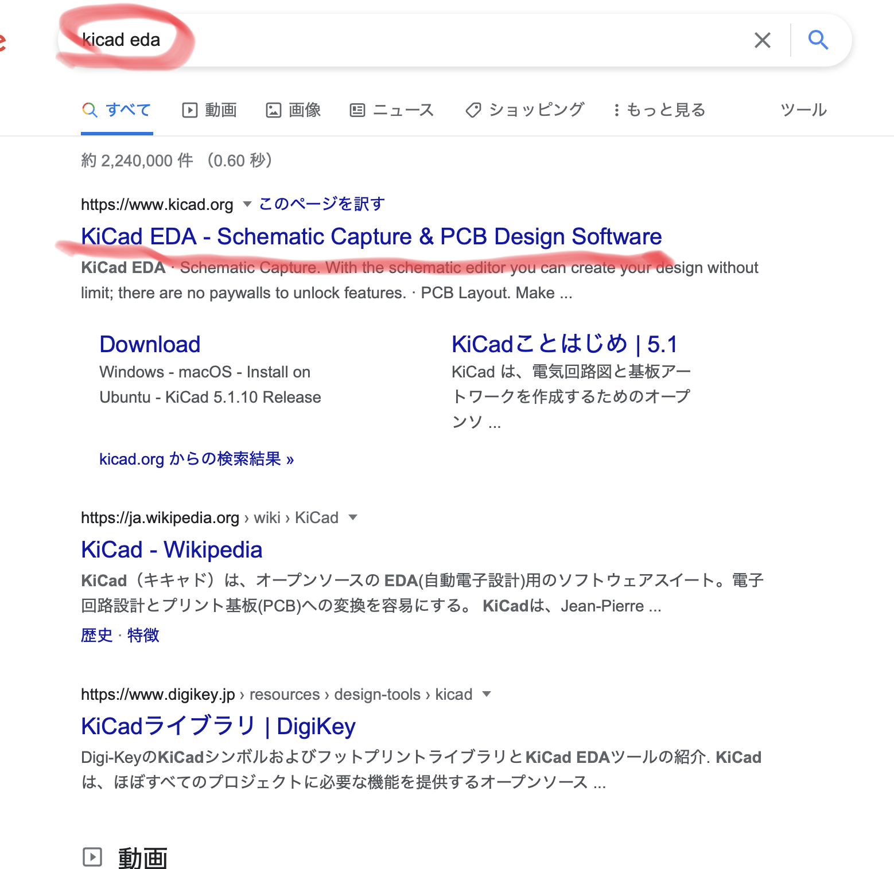
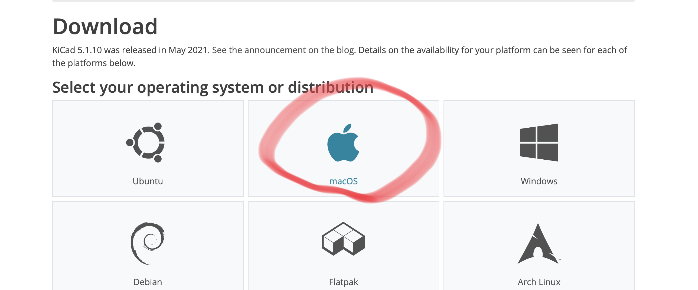
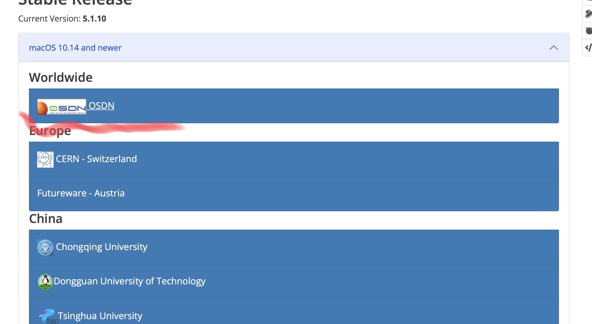
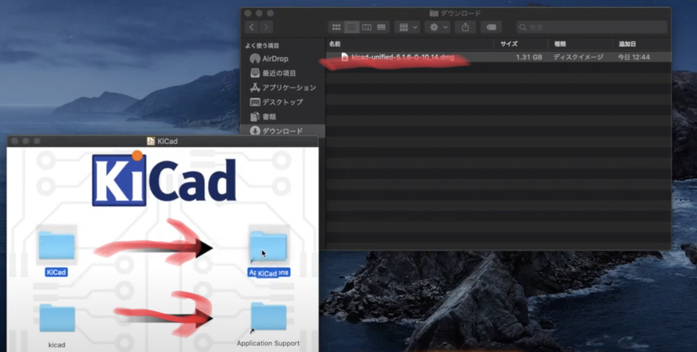
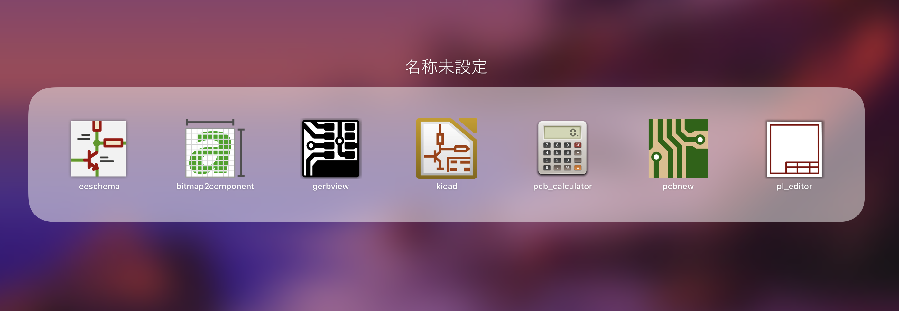

Hello!

・写真のようなソフト。
・基盤をデザインするために使用する。

・kicad edaと調べて赤線のところをクリック。

・赤丸のボタンをクリック。

・赤丸のボタンをクリック。
・WindowsのかたはWindowsを選択。

・どれを選択しても良いらしい。
・選択するものによってインストールの速度が違うという。
・でもチャイナでもヨーロッパでもないのでワールドワイドを選択した方が無難。

・インストールしたものを開いて矢印の通りに移動させる。
・移動させられない場合は、オリジナルのフォルダを開いて直接移動させる。

・ソフトがバラバラになっているため、一つのフォルダにまとめた方が良い。
・今回は基盤制作するためのソフトをインストールしました。
・これから少しずつ基盤の制作課程をアップしていきたいと思います。
・早く勉強したいという方は、こちら
の動画で勉強してみてください。
Fin.